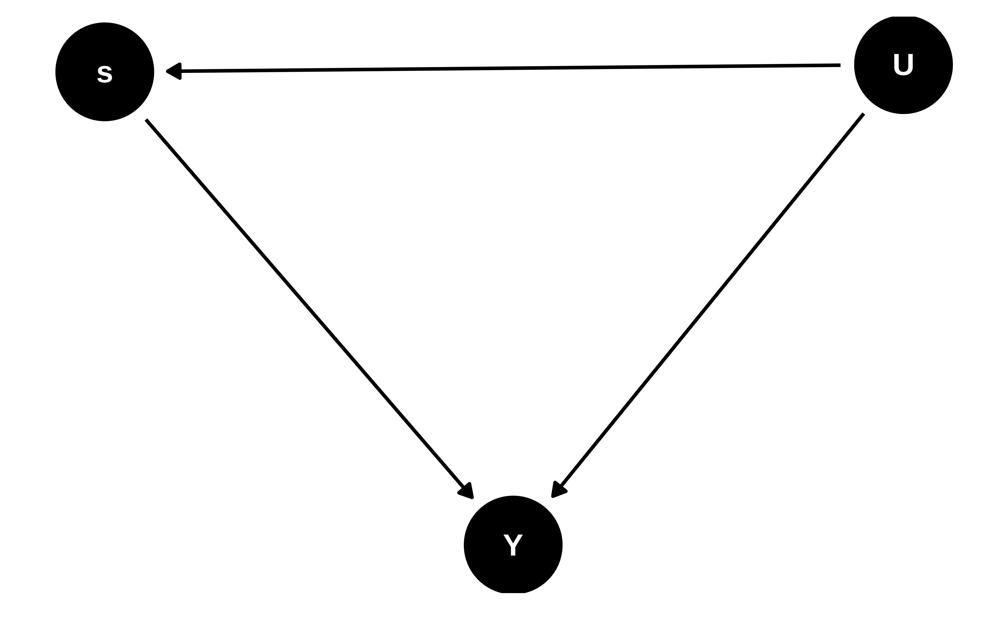
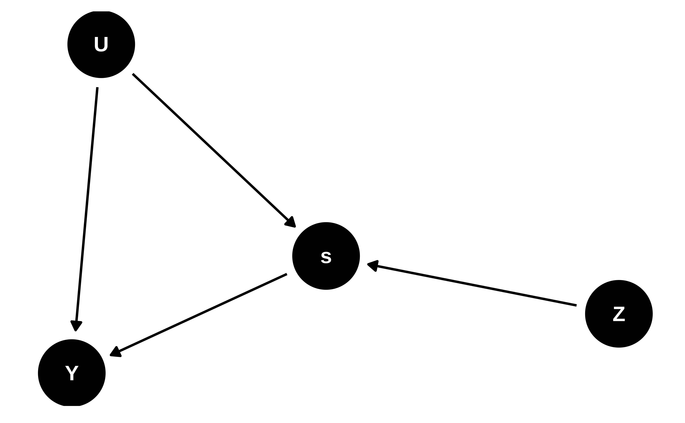
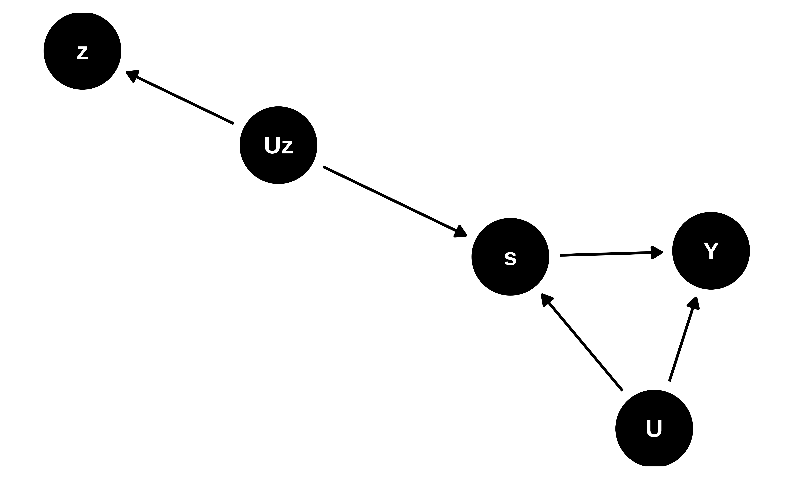

library(tidyverse) # for data wrangling
library(alr4) # for the data sets #
library(GGally)
library(parameters)
library(performance)
library(see)
library(car)
library(broom)
library(modelsummary)
library(texreg)
library(insight)
library(scales)
library(glue)
ggplot2::theme_set(ggplot2::theme_bw())
knitr::opts_chunk$set(
fig.width = 10,
fig.asp = 0.618,
fig.retina = 3,
dpi = 300,
out.width = "100%",
message = FALSE,
echo = TRUE,
cache = TRUE
)
# Custom functions to summaries data nicely
get_signif <-
function(x) {
symnum(
x,
corr = FALSE,
na = FALSE,
cutpoints = c(0, 0.001, 0.01, 0.05, 0.1, 1),
symbols = c("***", "**", "*", ".", " ")
) %>%
as.character()
}
tidy_skim <-
function(dta) {
dta %>%
select(- any_of(c("id", "time"))) %>%
skimr::skim_without_charts() %>%
as_tibble() %>%
select(any_of(c("skim_variable","n_missing")), contains("numeric")) %>%
rename_with( ~ str_remove(., "numeric\\."))
}
tidy_coeftest <-
function(
mod,
mod_name = deparse(substitute(mod)),
mod_vcov = vcov(mod),
dig = 3,
...) {
mod_name_sym <- sym(mod_name)
mod %>%
lmtest::coeftest(vcov. = mod_vcov) %>%
broom::tidy() %>%
mutate(
across(c(estimate, std.error),
~ scales::number(., 1 / 10 ^ dig, big.mark = ",")),
across(c(p.value), ~ insight::format_p(., stars_only = TRUE)),
mod_stat := glue::glue("{estimate}{p.value} ({std.error})")
) %>%
select(parameter = term, !!mod_name_sym := mod_stat)
}
tidy_gof <-
function(
mod,
mod_name = deparse(substitute(mod)),
dig = 3,
...) {
mod_sum <- summary(mod)
mod_sum <- mod_sum$fstatistic
if (is.vector(mod_sum)) {
df1 <- mod_sum[[2]]
df2 <- mod_sum[[3]]
df <- str_c(c(df1, df2), collapse = "; ")
} else {
df <- str_c(mod_sum$parameter, collapse = "; ")
}
mod %>%
broom::glance() %>%
{
dta <- .
if (!"logLik" %in% names(dta)) {
dta <-
mutate(dta, logLik = mod %>% stats::logLik() %>% as.numeric())
}
if (!"AIC" %in% names(dta)) {
dta <- mutate(dta, AIC = mod %>% stats::AIC() %>% as.numeric())
}
if (!"BIC" %in% names(dta)) {
dta <- mutate(dta, BIC = mod %>% stats::BIC() %>% as.numeric())
}
dta
} %>%
mutate(
across(any_of(c("r.squared", "deviance", "adj.r.squared")),
~ scales::number(., 1 / 10 ^ dig, big.mark = ",")),
across(any_of(c("statistic", "logLik", "AIC", "BIC")),
~ scales::number(., 1, big.mark = ",")),
`F Statistics (df)` =
glue("{statistic}{get_signif(p.value)} ", "({df})"),
nobs = scales::number(nobs, 1, big.mark = ",")
) %>%
select(
N = nobs,
`R-sq. adj.` = adj.r.squared,
`Log likelihood` = logLik,
AIC,
BIC,
`F Statistics (df)`
) %>%
pivot_longer(everything(),
names_to = "parameter",
values_to = mod_name)
}
tidy_summary <-
function(mod,
mod_name = deparse(substitute(mod)),
mod_vcov = vcov(mod),
dig = 3,
...) {
tidy_coeftest(mod,mod_name = mod_name, mod_vcov = mod_vcov, dig = dig) %>%
bind_rows(tidy_gof(mod, mod_name = mod_name, dig = dig))
}
tidy_summary_list <-
function(mod_list,
mod_vcov = NULL,
dig = 3,
...) {
# browser()
mod_list %>%
list(., names(.), seq_along(.)) %>%
pmap(~ {
vcov_here <- vcov(..1)
if (!is.null(mod_vcov[[..3]]))
vcov_here <- mod_vcov[[..3]]
tidy_summary(
mod = .x,
mod_name = .y,
mod_vcov = vcov_here,
dig = dig
)
}) %>%
reduce(full_join, by = "parameter")
}Instrumental Variable
MP223 - Applied Econometrics Methods for the Social Sciences
Eduard Bukin
R setup
Recap
What is the Ceteris Paribus?
What is the Selection Bias and how is it difference from the OVB?
What is long, short and auxiliary regression?
OVB formula?
Why having selection bias causes a problem?
Recap Example 1: return to schooling
Does more years of schooling causes higher wage?
Jacob Mincer first try to quantify the return to schooling (see Mincer 1974) by estimating the log of annual earning (\(\ln Y_i\)) as a function of years of education (\(s_i\)) and potential work experience (\(x_i\)) in the following fashion:
\[ \ln Y_i = \alpha + \rho s_i + \beta_1 x_i + \beta_2 x^{2}_i + \varepsilon_i \qquad(1)\]
Why experience is introduced in a quadratic form?
What if we omit experience?
Prove that excluding experience causes bias to years of education.
Show bias of excluded experience
- Write down long, short, auxiliary regression and the OVB formula.
- Short: \(\ln Y_i = \alpha^S + \rho^{S} s_i + \varepsilon_i^S\)
- Long: \(\ln Y_i = \alpha + \rho^L s_i + \beta_1 x_i + \beta_2 x^{2}_i + \varepsilon_i\)
- Auxiliary: \(x_i = \delta_0 + \delta_{xs} s_i + \upsilon_i\)
- OVB formula: \(\text{OVB} = \pi_1 \times \rho^L\)
- Hypothesize about \(\delta_{xs}\) and \(\rho^L\)
- Relationship between education and income: \(\rho^L_i > 0\)
- Relationship between experience and education: \(\delta_{xs} < 0\)
- \(\text{OVB} = \delta_{xs} \times \rho^L = \{\delta_{xs} > 0 \} \times \{ \rho < 0 \} \Longrightarrow \text{OVB} < 0\)
- Excluding \(x_i\) cases bias to the return to education by reducing the estimated level of \(\rho^S\) either to lower value or below zero. It could also make it insignificantly different from zero.
Is there a ceteris paribus in the mincer’s equation?
- Is control for potential experience sufficient for ceteris to be paribus? At a given experience level, are more- and less-educated workers equally able and diligent? 1
- We may rewrite Equation 1 in the way that it incorporates ability:
- \[Y_i = \alpha + \rho s_i + \gamma A^{'}_{i} + \varepsilon_i \qquad(2)\]
- where \(A^{'}_{i}\) vector of control variables such as ability, experience and that we desire to have in order to ensure the unbiased estimates of \(\rho\).
- Omitting ability causes a Selection bias: \(\rho^{S} = \rho + \underbrace{\delta_{A^{'} s} \times \gamma}_{\text{ability bias}}\)
How do we fight the Selection bias?
Randomized trials/experiments (Joshua D. Angrist and Pischke 2009, Ch 1-2.; Joshua D. Angrist and Pischke 2014, Ch. 1);
Regression analysis (Joshua D. Angrist and Pischke 2009, Ch 3.; Joshua D. Angrist and Pischke 2014, Ch. 2);
- Multiple regression (M. J. Wooldridge 2020, Ch. 3)
- Panel regression (M. J. Wooldridge 2020, Ch. 13-14; Croissant and Millo 2018; J. M. Wooldridge 2010)
- Other regressions: binary outcome (logit/probit), censored data (tobit), truncated data, count data (poisson regression), quantile regression …
Instrumental variables
- IV (2SLS, GMM) (Joshua D. Angrist and Pischke 2009, Ch. 4.; Joshua D. Angrist and Pischke 2014, Ch. 3);
- LATE – Local average treatment effect
- Selection models, Heckman … (M. J. Wooldridge 2020, Ch. 17; Cameron and Trivedi 2005, Ch. 11-27)
DID - Difference in Difference;
RDD - Regression Discontinuity Design;
Endogeneity as a form of selection bias: return to schooling
Definition
Consider a LONG model: \(Y_i = \alpha + \rho s_i + \gamma A^{'}_{i} + \varepsilon_i\) and it SHORT counterpart: \(Y_i = \alpha^S + \rho^S s_i + \varepsilon^{S}_i\);
- where \(s_i\) is a causal variable of interest and \(A^{'}_{i}\) is the vector of control variables that we desire to have in order to ensure unbiased estimates of \(\rho\);
Confusing definition of endogeneity:
- Variable \(s_i\) is endogenous if it correlates with the error terms \(\varepsilon^{S}_i\) : \(Cov(s_i, \varepsilon^{S}_i) \neq 0\)
Definition (cont.)
In practice, endogeneity means that variation in the independent variable \(s_i\) (years of education) are not “random” as compared to the variation in the dependent variable \(Y_i\) and other regressors \(A^{'}_i\);
If variance of \(s_i\) is truly independent of \(Y_i\), \(s_i\) is exogenous.
Causes of endogeneity
Omitted Variable Bias
Measurement Error
Simultaneity
Omitted Variable Bias
Long model:
\[ Y_i = \alpha + \rho s_i + \gamma A^{'}_{i} + \varepsilon_i \\ \] . . .
Short model:
\[ Y_i = \alpha^S + \rho^S s_i + \varepsilon^{S}_i \qquad(3)\]
If \(s_i\) and \(A_i\) are correlated, we can assume a linear relationship between them:
\[ A_i = \delta_0 + \delta_1 s_i + \upsilon_i \]
\[ \Rightarrow Y_i = \alpha + \rho s_i + \gamma (\delta_0 + \delta_1 A_i + \upsilon_i) + \varepsilon_i \]
\[ = \underbrace{(\alpha + \gamma \delta_0)}_{\alpha^S} + \underbrace{(\rho + \gamma \delta_1)}_{\rho^S} s_i + \underbrace{(\varepsilon_i + \gamma \upsilon_i)}_{\varepsilon_i^S} \]
Omitted Variable Bias: visually
Measurement error
We estimate a long model: \(Y_i = \alpha + \beta s^*_i + e_i \\\),
- but \(s^*_i\) is unavailable, we only have \(S_i = s^*_i + m_i\) instead
- \(m_i\) is a systematic measurement error (\(E[m_i] =0\) and \(Cov(s^*_i, m_i) = Cov(e_i, m_i) = 0\)).
Desired coefficient \(\beta = \frac{Cov(Y_i, s_i)}{Var(s_i)}\)
But with mis-measured data, we estimate biased coefficient \(\beta_b\)
\[ \beta_b = \frac{Cov(Y_i, s_i)}{Var(s_i)} = \frac{Cov(a+\beta s^*_i + e_i, s^*_i + m_i)}{Var(s_i)} \\ = \frac{\beta \cdot Cov(s^*_i, s^*_i)}{Var(s_i)} = \beta \frac{Var(s^{*}_i)}{Var(s_i)} \]
- (see Joshua D. Angrist and Pischke 2014, Ch. 6)
Simultaneity
Simultaneity occurs if at least two variables are jointly determined.
- A typical case is when observed outcomes are the result of separate behavioral mechanisms that are coordinated in an equilibrium.
The prototypical case is a system of demand and supply equations:
- \(D(p)\) = how high would demand be if the price was set to \(p\)?
- \(S(p)\) = how high would supply be if the price was set to \(p\)?
Number of police people and the crime rate.
(see M. J. Wooldridge 2020, Ch. 17) for more details on the problem and solutions.
Instrumental Variable
IV
Recall the short Equation 3 model \(Y_i = \alpha^S + \rho^S s_i + \varepsilon^{S}_i\), where
Instrumental variable is another variable \(Z_i\);
\(Z_i\) has a strong association with \(s_i\);
\(Z_i\) does not affect \(Y_i\) except through its potential effect on A;
\(Z_i\) and \(Y_i\) do not share any common causes;
IV image


2SLS
Consistency and unbiasedness of the IV
IV estimates are not unbiased, but they are consistent (Joshua D. Angrist and Krueger 2001).
Unbiasedness means the estimator has a sampling distribution centered on the parameter of interest in a sample of any size, while
Consistency only means that the estimator converges to the population parameter as the sample size grows.
. . . ::: callout-note Researchers using instrumental variables should aspire to work with large samples. :::
Questions about Questions
Research FAQs:
Before running a regression, ask the following four questions (see Joshua D. Angrist and Pischke 2009, Ch. 1)
What is the causal relationship of interest?
What is the experiment that could ideally be used to capture the causal effect of interest?
What is your identification strategy?
What is your mode of statistical inference?
FAQ 1. What is the causal relationship of interest?
FAQ 2. What is the experiment…?
Describe an ideal experiment.
Highlight the forces you’d like to manipulate and the factors you’d like to hold constant.
FUQs: fundamentally unidentified questions
Causal effect of race or gender;
- However, we can experiment with how believes about a person’s gender of race affect decisions (Bertrand and Mullainathan 2004).
Do children that start school 1 year later learn more in the primary school?
- Because older kinds are in general better learners there is not counter factual.
- However, it is possible to establish this school starting effect on adults (Black, Devereux, and Salvanes 2008).
What is your identification strategy?
Identification strategy
is the manner in which a researcher uses observational data (i.e., data not generated by a randomized trial) to approximate a real experiment (J. D. Angrist and Keueger 1991)
finding a suitable natural experiment where the treatment is randomly assigned;
choosing the right instrument to endogenous variable that mimics a natural experiment;
What is your mode of statistical inference?
describes the population to be studied,
the sample to be used,
and the assumptions made when constructing standard errors.
choose appropriate statistical methods
apply them diligently.
Example 2. The colonial origins of comparative development: An empirical investigation (Acemoglu2011?)
Acemoglu, D., Johnson, S., & Robinson, J. A. (2001). The colonial origins of comparative development: An empirical investigation. American economic review, 91(5), 1369-1401.
Introduction and the research Question
Example 2. Twins instrument on number of children.
Angrist, J., & Evans, W. N. (1996). Children and their parents’ labor supply: Evidence from exogenous variation in family size.
Example 3. Wage and quarter of birth.
J. Angrist and A. Krueger, “Instrumental Variables and the Search for Identification,” Journal of Economic Perspectives, Fall 2001.
Acemoglu, D., & Angrist, J. (2000). How large are human-capital externalities? Evidence from compulsory schooling laws. NBER macroeconomics annual, 15, 9-59.
RF - Reduced Form 1st - First stage
important literature
J. Angrist and A. Krueger, “Instrumental Variables and the Search for Identification,” Journal of Economic Perspectives, Fall 2001.
J. Angrist, “Lifetime Earnings and the Vietnam Era Draft Lottery: Evidence from Social Security Administrative Records,” American Economic Review, June 1990.
Acemoglu, D., & Angrist, J. (2000). How large are human-capital externalities? Evidence from compulsory schooling laws. NBER macroeconomics annual, 15, 9-59.
Angrist, J., & Evans, W. N. (1996). Children and their parents’ labor supply: Evidence from exogenous variation in family size.
References
Angrist, J. D., and A. B. Keueger. 1991. “Does Compulsory School Attendance Affect Schooling and Earnings?” The Quarterly Journal of Economics 106 (4): 979–1014. https://doi.org/10.2307/2937954.
Angrist, Joshua D, and Alan B Krueger. 2001. “Instrumental Variables and the Search for Identification: From Supply and Demand to Natural Experiments.” Journal of Economic Perspectives 15 (4): 69–85. https://doi.org/10.1257/jep.15.4.69.
Angrist, Joshua D., and Jörn-Steffen Pischke. 2009. Mostly Harmless Econometrics. Princeton University Press. https://doi.org/10.1515/9781400829828.
———. 2014. Mastering’metrics: The Path from Cause to Effect. Princeton University Press.
Bertrand, Marianne, and Sendhil Mullainathan. 2004. “Are Emily and Greg More Employable Than Lakisha and Jamal? A Field Experiment on Labor Market Discrimination.” American Economic Review 94 (4): 991–1013. https://doi.org/10.1257/0002828042002561.
Black, Sandra E., Paul J. Devereux, and Kjell G. Salvanes. 2008. “Staying in the Classroom and Out of the Maternity Ward? The Effect of Compulsory Schooling Laws on Teenage Births.” The Economic Journal 118 (530): 1025–54. https://doi.org/10.1111/j.1468-0297.2008.02159.x.
Cameron, A Colin, and Pravin K Trivedi. 2005. Microeconometrics: Methods and Applications. Cambridge university press.
Croissant, Yves, and Giovanni Millo. 2018. Panel Data Econometrics with r. John Wiley & Sons.
Mincer, Jacob. 1974. “Schooling, Experience, and Earnings. Human Behavior & Social Institutions No. 2.”
Wooldridge, Jeffrey M. 2010. Econometric Analysis of Cross Section and Panel Data. MIT press.
Wooldridge, M. Jeffrey. 2020. Introductory Econometrics: A Modern Approach. South-Western. https://www.cengage.uk/shop/isbn/9781337558860.